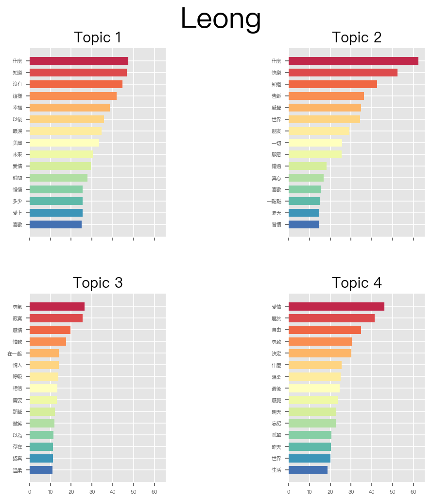

Assignment X: Topic Modeling Fish Leong (梁靜茹）¶
Import necessary dependencies and settings¶
import warnings
warnings.filterwarnings("ignore")#, category=DeprecationWarning)
import pandas as pd
import numpy as np
import re
import matplotlib.pyplot as plt
import random
pd.options.display.max_colwidth = 200
Sample corpus of text documents¶
Leong Songs¶
import pickle
with open('leong_seg.pickle', 'rb') as f:
leong_seg = pickle.load(f)
corpus_df =pd.read_csv('../../../RepositoryData/data/data-chinese-songs-leong.csv')
corpus_df.head()
| title | lyric | |
|---|---|---|
| 0 | 飄洋過海來看你 | 為你我用了 半年的積蓄飄洋過海的來看你\n為了這次相聚 我連見面時的呼吸都曾反覆練習\n言語從來沒能將我的情意表達千萬分之一\n為了這個遺憾 我在夜裡想了又想不肯睡去\n記憶它總是慢慢的累積 在我心中無法抹去\n為了你的承諾 我在最絕望的時候都忍著不哭泣\n陌生的城市啊 熟悉的角落裡\n也曾彼此安慰 也曾相擁嘆息 不管將會面對什麼樣的結局\n在漫天風沙裡望著你遠去 我竟悲傷得不能自己\n多... |
| 1 | 微光 | 尋找螢火蟲的微光 等待沼澤中的璀璨\n你們的情話在歌唱 填滿空蕩蕩的夜晚\n露珠吻別夢醒的臉 迎接不識趣的日光\n埋怨先瞌睡的對方 懷著等不到的遺憾\n如今呆板的另一半 陪你看電視的螢光\n沙發乾淨得很穩當 屏幕閃爍得很孤單\n蘆葦在你心裡盪漾 沼澤早就煙消雲散\n你也厭倦每年元旦 在外面看煙火瀰漫\n回憶 短暫 人生 太長\n別為 剎那 淚光 錯過 滿天星光\n原諒螢火蟲沒膽量 受不了浪... |
| 2 | 我好嗎 | 金黃的銀杏樹再次滿開了\n那一年樹下的約定已解散了\n儘管藍天仍像青春般清澈\n我們不再見了 自顧自活著\n再多問候往往與快樂無涉\n也只能獨自沈溺 思念的片刻\n淚水淹沒歲月 何時甘願 去跟遺憾求和\n曾經圓滿我的 碾碎我的 都回不去了\n不是心不死 還留你一個位置\n只是呼喚過的名字\n要怎麼從回憶的固執 徹底消失\n你好嗎 說給空氣聽 徒勞的心情\n刻骨銘心的愛情 只留下無處寄託的感... |
| 3 | 慢冷 | 說完了 好像話都說完了\n總是沉默對坐著\n眼裡是濃濃夜色\n感情是偏執的 越愛越是偏執的\n不相信我看到的\n硬要說裂縫不過 是皺褶\n怎麼先熾熱的卻先變冷了\n慢熱的卻停不了還在沸騰著\n看時光任性快跑隨意就轉折\n慢冷的人啊 會自我折磨\n衝動的人向來聽不見挽留\n這世界大得讓你很難不旅遊\n浪漫讓你溫柔 也讓你最惹人 淚流\n牽你手 若無其事牽你手\n你像被動的木偶\n多狠多讓人厭... |
| 4 | 如愛所願 | 忘了多久的好久不見\n曾以為再也不見\n青春的執著堅決\n換一張笑臉\n放下痛過的月月年年\n迴避的記憶斷片\n此刻交疊了視線\n不再是解不開的結\n歷練讓我們都變得\n比從前更溫熱\n抹去了尖銳沒有誰對誰的虧欠\n離開後的心碎\n諒解裡的後悔\n都不是故事的終點\n我們都如愛所願 變成更幸福的人\n曾執迷的緣份 笑談成傷痕\n此刻 能如愛所願 謝謝從前\n換另一種身份 祝福彼此下個旅程\... |
## select words whose POS starts with N or V but NOT pronouns (Nh) or numbers (Neu)
leong_words = [[(w,p) for (w,p) in text if re.match(r'^[NV](?!(h|eu))',p)] for text in leong_seg]
norm_corpus = [' '.join([w for w,p in text]) for text in leong_words]
norm_corpus[0]
'你我 用 半 年 積蓄 飄洋過海 看 這 次 相聚 見面 時 呼吸 練習 言語 情意 表達 這 個 遺憾 夜裡 想 想 睡去 記憶 慢慢 累積 心 中 抹去 承諾 絕望 時候 忍 哭泣 陌生 城市 熟悉 角落 裡 安慰 相擁 嘆息 面對 什麼 樣 結局 漫天 風沙 裡 望 遠去 悲傷 盼 送 君 山窮水盡 一生 相依 用 半 年 積蓄 飄洋過海 看 這 次 相聚 見面 時 呼吸 練習 言語 情意 表達 千萬分之一 這 個 遺憾 夜裡 想 想 睡去 記憶 慢慢 累積 心 中 抹去 承諾 絕望 時候 忍 哭泣 陌生 城市 熟悉 角落 裡 安慰 相擁 嘆息 面對 什麼 樣 結局 漫天 風沙 裡 望 遠去 悲傷 盼 送 君 山窮水盡 一生 相依 陌生 城市 熟悉 角落 裡 安慰 相擁 嘆息 面對 什麼 樣 結局 漫天 風沙 裡 望 遠去 悲傷 盼 送 君 千里 山窮水盡 一生 相依 盼 送 君 千里 山窮水盡 一生 相依'
Bag of Words Model¶
Bag-of-words model is the simplest way to vectorize texts into numeric representations.
In short, it is a method to represent a text using its word frequency list.
The sequential order of words in the text is therefore naively ignored.
from sklearn.feature_extraction.text import CountVectorizer
# get bag of words features in sparse format
cv = CountVectorizer(min_df=5, max_df=0.95,token_pattern=r'[^\s]{2,}')
cv_matrix = cv.fit_transform(norm_corpus)
cv_matrix
<194x331 sparse matrix of type '<class 'numpy.int64'>'
with 3410 stored elements in Compressed Sparse Row format>
# view dense representation
# warning might give a memory error if data is too big
cv_matrix = cv_matrix.toarray()
cv_matrix
array([[0, 0, 0, ..., 0, 0, 0],
[0, 0, 0, ..., 0, 0, 0],
[0, 0, 0, ..., 0, 0, 0],
...,
[0, 0, 1, ..., 0, 0, 0],
[0, 0, 0, ..., 0, 0, 0],
[0, 0, 0, ..., 0, 0, 0]])
# get all unique words in the corpus
vocab = np.array(cv.get_feature_names())
# show document feature vectors
pd.DataFrame(cv_matrix, columns=vocab)
| 一些 | 一切 | 一樣 | 一生 | 一點 | 一點點 | 不停 | 不同 | 世界 | 之前 | ... | 青春 | 靜靜 | 靠近 | 願意 | 風景 | 飛翔 | 體貼 | 黎明 | 黑夜 | 默契 | |
|---|---|---|---|---|---|---|---|---|---|---|---|---|---|---|---|---|---|---|---|---|---|
| 0 | 0 | 0 | 0 | 4 | 0 | 0 | 0 | 0 | 0 | 0 | ... | 0 | 0 | 0 | 0 | 0 | 0 | 0 | 0 | 0 | 0 |
| 1 | 0 | 0 | 0 | 0 | 0 | 0 | 0 | 0 | 0 | 0 | ... | 0 | 0 | 0 | 0 | 0 | 0 | 0 | 0 | 0 | 0 |
| 2 | 0 | 0 | 0 | 0 | 0 | 0 | 0 | 0 | 0 | 0 | ... | 1 | 0 | 0 | 0 | 1 | 0 | 0 | 0 | 0 | 0 |
| 3 | 0 | 0 | 0 | 0 | 0 | 0 | 0 | 0 | 1 | 0 | ... | 0 | 0 | 0 | 0 | 0 | 0 | 0 | 0 | 0 | 0 |
| 4 | 0 | 0 | 1 | 0 | 1 | 0 | 0 | 0 | 0 | 0 | ... | 1 | 0 | 0 | 0 | 0 | 0 | 0 | 0 | 0 | 0 |
| ... | ... | ... | ... | ... | ... | ... | ... | ... | ... | ... | ... | ... | ... | ... | ... | ... | ... | ... | ... | ... | ... |
| 189 | 0 | 0 | 0 | 0 | 0 | 0 | 0 | 0 | 1 | 0 | ... | 0 | 0 | 2 | 0 | 0 | 0 | 0 | 2 | 0 | 0 |
| 190 | 0 | 0 | 0 | 0 | 0 | 0 | 0 | 0 | 0 | 0 | ... | 0 | 0 | 0 | 0 | 1 | 0 | 0 | 0 | 0 | 0 |
| 191 | 0 | 0 | 1 | 0 | 0 | 0 | 0 | 0 | 0 | 0 | ... | 0 | 0 | 0 | 1 | 0 | 0 | 0 | 0 | 0 | 0 |
| 192 | 0 | 0 | 0 | 0 | 0 | 0 | 0 | 0 | 0 | 0 | ... | 0 | 0 | 0 | 0 | 0 | 0 | 0 | 0 | 0 | 0 |
| 193 | 0 | 0 | 0 | 0 | 0 | 0 | 0 | 0 | 0 | 0 | ... | 0 | 0 | 0 | 0 | 0 | 0 | 0 | 0 | 0 | 0 |
194 rows × 331 columns
Latent Dirichlet Allocation¶
Find optimal topic number
# %%time
# from sklearn.decomposition import LatentDirichletAllocation
# from sklearn.model_selection import GridSearchCV
# # Options to try with our LDA
# # Beware it will try *all* of the combinations, so it'll take ages
# search_params = {
# 'n_components': [4,5,6],
# 'learning_decay': [.5, .7]
# }
# # Set up LDA with the options we'll keep static
# model = LatentDirichletAllocation(learning_method='batch', max_iter = 10000, random_state=0)
# # Try all of the options
# gridsearch = GridSearchCV(model, param_grid=search_params, n_jobs=-1, verbose=1)
# gridsearch.fit(cv_matrix)
# ## Save the best model
# best_lda = gridsearch.best_estimator_
# ## took 2h 42min 28s
# cv_results_df = pd.DataFrame(gridsearch.cv_results_)
# cv_results_df
# import seaborn as sns
# sns.pointplot(x="param_n_components", y="mean_test_score", hue="param_learning_decay", data=cv_results_df)
%%time
from sklearn.decomposition import LatentDirichletAllocation
num_of_topic=4
lda = LatentDirichletAllocation(n_components=num_of_topic, max_iter=1000, random_state=0,
max_doc_update_iter=50, learning_method='online',
batch_size=50, learning_offset = 50, n_jobs = -1)
dt_matrix = lda.fit_transform(cv_matrix) # document matrix
CPU times: user 18.5 s, sys: 1.47 s, total: 20 s
Wall time: 47.3 s
best_lda = lda
## Permanent Setting Version
import seaborn as sns
plt.style.use('seaborn-pastel')
# plt.rcParams['dpi'] = 150
plt.rcParams['font.sans-serif']=["PingFang HK"]
def plot_top_words(model, feature_names, n_top_words, title, fig_grid=[2,2]):
#pal = sns.color_palette("viridis", n_top_words)
pal= sns.color_palette("Spectral", n_top_words)
fig, axes = plt.subplots(fig_grid[0], fig_grid[1], figsize=(7, 7), sharex=True, dpi=150)
axes = axes.flatten()
for topic_idx, topic in enumerate(model.components_):
top_features_ind = topic.argsort()[:-n_top_words - 1:-1]
top_features = [feature_names[i] for i in top_features_ind]
weights = topic[top_features_ind]
ax = axes[topic_idx]
ax.barh(top_features, weights, height=0.7, color=pal)
ax.set_title(f'Topic {topic_idx +1}',
fontdict={'fontsize': 14})
ax.invert_yaxis()
ax.tick_params(axis='both', which='major', labelsize=5)
for i in 'top right left'.split():
ax.spines[i].set_visible(False)
fig.suptitle(title, fontsize=28)
plt.subplots_adjust(top=0.90, bottom=0.05, wspace=0.90, hspace=0.3)
plt.show()
plot_top_words(best_lda, cv.get_feature_names(), n_top_words=15, title="Leong")

doc_topic_matrix = best_lda.transform(cv_matrix)
num_of_topic = 4
# %%time
# from sklearn.decomposition import LatentDirichletAllocation
# lda = LatentDirichletAllocation(n_components=num_of_topic, max_iter=10000, random_state=0,
# max_doc_update_iter=50, learning_method='online',
# batch_size=50, learning_offset = 50, n_jobs = -1)
# dt_matrix = lda.fit_transform(cv_matrix) # document matrix
features = pd.DataFrame(dt_matrix, columns = ["T"+str(n) for n in range(1,num_of_topic+1)])
features
| T1 | T2 | T3 | T4 | |
|---|---|---|---|---|
| 0 | 0.00595 | 0.00579 | 0.00601 | 0.98225 |
| 1 | 0.00905 | 0.43569 | 0.00929 | 0.54597 |
| 2 | 0.00716 | 0.00705 | 0.37360 | 0.61219 |
| 3 | 0.02412 | 0.21715 | 0.73676 | 0.02197 |
| 4 | 0.60882 | 0.11471 | 0.27066 | 0.00581 |
| ... | ... | ... | ... | ... |
| 189 | 0.45723 | 0.00484 | 0.00464 | 0.53329 |
| 190 | 0.00938 | 0.00986 | 0.00912 | 0.97165 |
| 191 | 0.32356 | 0.06296 | 0.49933 | 0.11414 |
| 192 | 0.54256 | 0.00793 | 0.00812 | 0.44139 |
| 193 | 0.91921 | 0.02581 | 0.02958 | 0.02540 |
194 rows × 4 columns
Show topics and their weights¶
# tt_matrix = lda.components_ # topic matrix
# for topic_weights in tt_matrix:
# topic = [(token, weight) for token, weight in zip(vocab, topic_weights)]
# topic = sorted(topic, key=lambda x: -x[1])
# topic = [item for item in topic if item[1] > 0.6]
# print(topic)
# print()
topic_terms = best_lda.components_
top_terms = 20
topic_keywords_idxs = np.argsort(-np.absolute(topic_terms), axis=1)[:,:top_terms]
topic_keywords = vocab[topic_keywords_idxs]
topics = [', '.join(w) for w in topic_keywords]
pd.set_option('display.max_colwidth', None)
topics_df = pd.DataFrame(topics,
columns = ['Keywords per Topic'],
index = ["Topic"+str(n) for n in range(1,num_of_topic+1)])
topics_df
| Keywords per Topic | |
|---|---|
| Topic1 | 什麼, 知道, 沒有, 這樣, 幸福, 以後, 眼淚, 美麗, 未來, 愛情, 時間, 慢慢, 多少, 愛上, 喜歡, 生命, 一樣, 現在, 看見, 快樂 |
| Topic2 | 什麼, 快樂, 知道, 告訴, 感覺, 世界, 朋友, 一切, 願意, 錯過, 真心, 喜歡, 一點點, 夏天, 習慣, 浪漫, 瞭解, 今天, 假裝, 發現 |
| Topic3 | 勇氣, 寂寞, 感情, 情歌, 在一起, 情人, 呼吸, 相信, 需要, 那些, 微笑, 以為, 存在, 認真, 溫柔, 感動, 快樂, 回憶, 心碎, 過去 |
| Topic4 | 愛情, 屬於, 自由, 勇敢, 決定, 什麼, 溫柔, 最後, 感覺, 明天, 忘記, 孤單, 昨天, 世界, 生活, 今天, 時候, 感謝, 發現, 溫暖 |
pd.options.display.float_format = '{:,.5f}'.format
pd.set_option('display.max_colwidth', 200)
dt_df = pd.DataFrame(doc_topic_matrix,
columns=["Topic"+str(n) for n in range(1,num_of_topic+1)])
max_contrib_topics = dt_df.max(axis=0)
dominant_topics = max_contrib_topics.index
contrib_perc = max_contrib_topics.values
document_numbers = [dt_df[dt_df[t]==max_contrib_topics.loc[t]].index[0]
for t in dominant_topics]
documents = [norm_corpus[i] for i in document_numbers]
documents_df = pd.DataFrame({'Dominant Topic': dominant_topics,
'Contribution%': contrib_perc,
'DOCID': document_numbers,
'Topic': topics_df['Keywords per Topic'],
'Text': documents})
documents_df
| Dominant Topic | Contribution% | DOCID | Topic | Text | |
|---|---|---|---|---|---|
| Topic1 | Topic1 | 0.98836 | 18 | 什麼, 知道, 沒有, 這樣, 幸福, 以後, 眼淚, 美麗, 未來, 愛情, 時間, 慢慢, 多少, 愛上, 喜歡, 生命, 一樣, 現在, 看見, 快樂 | 記得 次 牽 手 小 狗 走 厚厚 手 握 流汗 手 握 未來 那 晚 吃完 晚餐 愛河 小心 墜入 愛河 自行車 緩緩 溫柔 濕濕 吻 額頭 知不知道 掉 多少 頭髮 有 天 禿頭 想 辦法 知不知道 情話 小花 心 底 發芽 愛 帶給 許多 快樂 想 走到 後來 發生 什麼 事情 保存 愛 甜蜜 想 什麼 失去 愛 帶給 一些 回憶 走到 最後 什麼 愛 愛 每 天 美麗 此刻 愛 快... |
| Topic2 | Topic2 | 0.98502 | 43 | 什麼, 快樂, 知道, 告訴, 感覺, 世界, 朋友, 一切, 願意, 錯過, 真心, 喜歡, 一點點, 夏天, 習慣, 浪漫, 瞭解, 今天, 假裝, 發現 | 小 任性 鬧 情緒 讓 愛 淋 雨滴 放開 握緊 思念 手心 壞 習慣 倔 脾氣 道歉 忘記 那 什麼 計較 親密 跳到 背 上 海 邊 靠近 天堂 看 遠 笑 跑 橫越 海岸線 蜿蜒 個 微妙 體貼 知道 今天 情人節 次 聽 說 淚水 湧成 溫泉 個 愛 改變 知道 今天 情人節 看見 有 特別 讓 新 快樂 和 回憶 重疊 間奏 壞 習慣 倔 脾氣 道歉 忘記 那 什麽 計較 親密 ... |
| Topic3 | Topic3 | 0.98604 | 31 | 勇氣, 寂寞, 感情, 情歌, 在一起, 情人, 呼吸, 相信, 需要, 那些, 微笑, 以為, 存在, 認真, 溫柔, 感動, 快樂, 回憶, 心碎, 過去 | 有 些 事 問 有 些 人 等 許多 細節 湮沒 記得 那 副歌 情話 現實 反駁 句 情歌 安慰 寂寞 餵養 寂寞 聽 那 熟悉 前奏 回憶 逆流 成 河 淹沒 那些 情歌 唱 別 後 那 片 天空 說 希望 懂 愛恨 忐忑 陪 走過 情歌 告訴 唱 勇氣 沒 勇氣 沒 結果 每 個 夢 醒 時分 陪 數 傷痕 許多 細節 復活 唱起 那 首 歌 有 些 話 說 安可 讓 感動 讓 心痛... |
| Topic4 | Topic4 | 0.98811 | 41 | 愛情, 屬於, 自由, 勇敢, 決定, 什麼, 溫柔, 最後, 感覺, 明天, 忘記, 孤單, 昨天, 世界, 生活, 今天, 時候, 感謝, 發現, 溫暖 | 堅持 值得 堅持 相信 真 敢 追求 敢 擁有 算了 遇見 天真 屬於 昨天 之前 結局 決定 決定 屬於 明天 之後 憧憬 迷信 迷信 屬於 點點滴滴 傷心 忘記 屬於 閃閃 發亮 愛情 努力 努力 屬於 風 那 飛翔 屬於 海洋 那 洶湧 屬於 愛 來 來 敢 命中 注定 那 個 這裡 屬於 昨天 之前 結局 決定 決定 屬於 明天 之後 憧憬 迷信 迷信 屬於 點點滴滴 傷心 忘記 ... |
##
## install: !conda install -c conda-forge pyldavis
import pyLDAvis
import pyLDAvis.sklearn
import dill
pyLDAvis.enable_notebook()
cv_matrix2 = np.matrix(cv_matrix)
pyLDAvis.sklearn.prepare(best_lda, cv_matrix2, cv, mds="PCoA")
/Users/Alvin/opt/anaconda3/lib/python3.7/site-packages/ipykernel/ipkernel.py:283: DeprecationWarning: `should_run_async` will not call `transform_cell` automatically in the future. Please pass the result to `transformed_cell` argument and any exception that happen during thetransform in `preprocessing_exc_tuple` in IPython 7.17 and above.
and should_run_async(code)
Clustering documents using topic model features¶
from sklearn.cluster import KMeans
km = KMeans(n_clusters=num_of_topic, random_state=0)
km.fit_transform(features)
cluster_labels = km.labels_
cluster_labels = pd.DataFrame(cluster_labels, columns=['ClusterLabel'])
pd.concat([corpus_df, cluster_labels], axis=1)
/Users/Alvin/opt/anaconda3/lib/python3.7/site-packages/ipykernel/ipkernel.py:283: DeprecationWarning: `should_run_async` will not call `transform_cell` automatically in the future. Please pass the result to `transformed_cell` argument and any exception that happen during thetransform in `preprocessing_exc_tuple` in IPython 7.17 and above.
and should_run_async(code)
| title | lyric | ClusterLabel | |
|---|---|---|---|
| 0 | 飄洋過海來看你 | 為你我用了 半年的積蓄飄洋過海的來看你\n為了這次相聚 我連見面時的呼吸都曾反覆練習\n言語從來沒能將我的情意表達千萬分之一\n為了這個遺憾 我在夜裡想了又想不肯睡去\n記憶它總是慢慢的累積 在我心中無法抹去\n為了你的承諾 我在最絕望的時候都忍著不哭泣\n陌生的城市啊 熟悉的角落裡\n也曾彼此安慰 也曾相擁嘆息 不管將會面對什麼樣的結局\n在漫天風沙裡望著你遠去 我竟悲傷得不能自己\n多... | 1 |
| 1 | 微光 | 尋找螢火蟲的微光 等待沼澤中的璀璨\n你們的情話在歌唱 填滿空蕩蕩的夜晚\n露珠吻別夢醒的臉 迎接不識趣的日光\n埋怨先瞌睡的對方 懷著等不到的遺憾\n如今呆板的另一半 陪你看電視的螢光\n沙發乾淨得很穩當 屏幕閃爍得很孤單\n蘆葦在你心裡盪漾 沼澤早就煙消雲散\n你也厭倦每年元旦 在外面看煙火瀰漫\n回憶 短暫 人生 太長\n別為 剎那 淚光 錯過 滿天星光\n原諒螢火蟲沒膽量 受不了浪... | 1 |
| 2 | 我好嗎 | 金黃的銀杏樹再次滿開了\n那一年樹下的約定已解散了\n儘管藍天仍像青春般清澈\n我們不再見了 自顧自活著\n再多問候往往與快樂無涉\n也只能獨自沈溺 思念的片刻\n淚水淹沒歲月 何時甘願 去跟遺憾求和\n曾經圓滿我的 碾碎我的 都回不去了\n不是心不死 還留你一個位置\n只是呼喚過的名字\n要怎麼從回憶的固執 徹底消失\n你好嗎 說給空氣聽 徒勞的心情\n刻骨銘心的愛情 只留下無處寄託的感... | 1 |
| 3 | 慢冷 | 說完了 好像話都說完了\n總是沉默對坐著\n眼裡是濃濃夜色\n感情是偏執的 越愛越是偏執的\n不相信我看到的\n硬要說裂縫不過 是皺褶\n怎麼先熾熱的卻先變冷了\n慢熱的卻停不了還在沸騰著\n看時光任性快跑隨意就轉折\n慢冷的人啊 會自我折磨\n衝動的人向來聽不見挽留\n這世界大得讓你很難不旅遊\n浪漫讓你溫柔 也讓你最惹人 淚流\n牽你手 若無其事牽你手\n你像被動的木偶\n多狠多讓人厭... | 3 |
| 4 | 如愛所願 | 忘了多久的好久不見\n曾以為再也不見\n青春的執著堅決\n換一張笑臉\n放下痛過的月月年年\n迴避的記憶斷片\n此刻交疊了視線\n不再是解不開的結\n歷練讓我們都變得\n比從前更溫熱\n抹去了尖銳沒有誰對誰的虧欠\n離開後的心碎\n諒解裡的後悔\n都不是故事的終點\n我們都如愛所願 變成更幸福的人\n曾執迷的緣份 笑談成傷痕\n此刻 能如愛所願 謝謝從前\n換另一種身份 祝福彼此下個旅程\... | 2 |
| ... | ... | ... | ... |
| 189 | 溫柔 | 走在風中 今天陽光 突然好溫柔\n天的溫柔 地的溫柔 像你抱著我\n然後發現 你的改變 孤單的今後\n如果冷 該怎麼度過\n天邊風光 身邊的我 都不在你眼中\n你的眼中 藏著什麼 我從來都不懂\n沒有關係 你的世界 就讓你擁有\n不打擾 是我的溫柔\n不知道 不明了 不想要 為什麼 我的心\n明明是想靠近 卻孤單的黎明\n不知道 不明了 不想要 為什麼 我的心\n那愛情的綺麗 總是在孤單裡... | 1 |
| 190 | 可惜不是妳 | 這一刻 突然覺得好熟悉 像昨天 今天同時在放映\n我這句語氣 原來好像妳 不就是我們愛過的證據\n差一點騙了自己騙了妳 愛與被愛不一定成正比\n我知道被疼是一種運氣 但我無法完全交出自己\n努力為你改變 卻變不了 預留的伏線\n以為在妳身邊 那也算永遠\n彷彿還是昨天 可是昨天 已非常遙遠\n但閉上我雙眼 我還看得見\n可惜不是妳 陪我到最後 曾一起走卻走失那路口\n感謝那是妳 牽過我的手... | 1 |
| 191 | 不必在乎我是誰 | 我覺得有點累 我想我缺少安慰\n我的生活如此乏味 生命像花一樣枯萎\n我整夜不能睡 可能是因為煙和咖啡\n如果是因為沒有人陪 我願意敞開心扉\n＊幾次真的想讓自己醉 讓自己遠離那許多恩怨是非\n讓隱藏已久的渴望隨風飛 喔～(請你)忘了我是誰\n女人若沒人愛多可悲 就算是有人聽我的歌會流淚\n我還是真的期待有人追 何必在乎我是誰\n我想你說的對 寂寞使人憔悴\n是寂寞使人心碎 戀愛中的女人纔... | 3 |
| 192 | 追光者 | 如果說你是海上的煙火\n我是浪花的泡沫\n某一刻你的光照亮了我\n如果說你是遙遠的星河\n耀眼得讓人想哭\n我是追逐著你的眼眸\n總在孤單時候眺望夜空\n我可以跟在你身後\n像影子追著光夢遊\n我可以等在這路口\n不管你會不會經過\n每當我為你抬起頭\n連眼淚都覺得自由\n有的愛像陽光傾落\n邊擁有邊失去著\n如果說你是夏夜的螢火\n孩子們為你唱歌\n那麼我是想要畫你的手\n你看我多麼渺小... | 2 |
| 193 | 禮物 | 當我還在年幼時 幻想美得多無知\n童年單純得像一張白紙\n當漸漸地長大後 也都清楚\n沒有人總是為誰停駐\n而你的安撫 是棵不倒的大樹\n阻擋風侵入 不讓我孤獨\n下一步 不再恍惚 放心追逐\n一定會爬到最高處慶祝\n這一路 我已看清楚 彩虹的出現也是\n大雨給的禮物\n讓我躺在星空下 慢慢回味你給我的領悟 | 2 |
194 rows × 3 columns
Visualize topic distributions¶
x_axis = corpus_df.index
y_axis = dt_df
fig, ax = plt.subplots(figsize=(20,5), dpi=150)
# Plot a stackplot - https://matplotlib.org/3.1.1/gallery/lines_bars_and_markers/stackplot_demo.html
ax.stackplot(x_axis, y_axis.T, baseline='wiggle', labels=y_axis.columns)
# Move the legend off of the chart
ax.legend(loc=(1.04,0))
/Users/Alvin/opt/anaconda3/lib/python3.7/site-packages/ipykernel/ipkernel.py:283: DeprecationWarning: `should_run_async` will not call `transform_cell` automatically in the future. Please pass the result to `transformed_cell` argument and any exception that happen during thetransform in `preprocessing_exc_tuple` in IPython 7.17 and above.
and should_run_async(code)
<matplotlib.legend.Legend at 0x7fd9b42cdc50>
from tmtoolkit.topicmod.evaluate import metric_coherence_gensim
# lda_model - LatentDirichletAllocation()
# vect - CountVectorizer()
# texts - the list of tokenized words
norm_corpus
norm_corpus_tokens = [doc.split() for doc in norm_corpus]
metric_coherence_gensim(measure='c_v',
top_n=10,
topic_word_distrib= lda.components_,
dtm=cv.fit_transform(norm_corpus),
vocab=np.array(cv.get_feature_names()),
texts=norm_corpus_tokens)
/Users/Alvin/opt/anaconda3/lib/python3.7/site-packages/ipykernel/ipkernel.py:283: DeprecationWarning: `should_run_async` will not call `transform_cell` automatically in the future. Please pass the result to `transformed_cell` argument and any exception that happen during thetransform in `preprocessing_exc_tuple` in IPython 7.17 and above.
and should_run_async(code)
/Users/Alvin/opt/anaconda3/lib/python3.7/site-packages/scipy/sparse/sparsetools.py:21: DeprecationWarning: `scipy.sparse.sparsetools` is deprecated!
scipy.sparse.sparsetools is a private module for scipy.sparse, and should not be used.
_deprecated()
[0.3301657819299678,
0.30907842422144227,
0.24949988709851803,
0.26112911930869515]